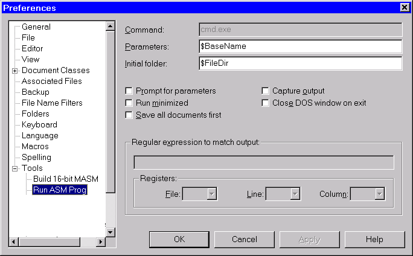
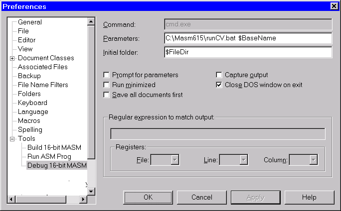
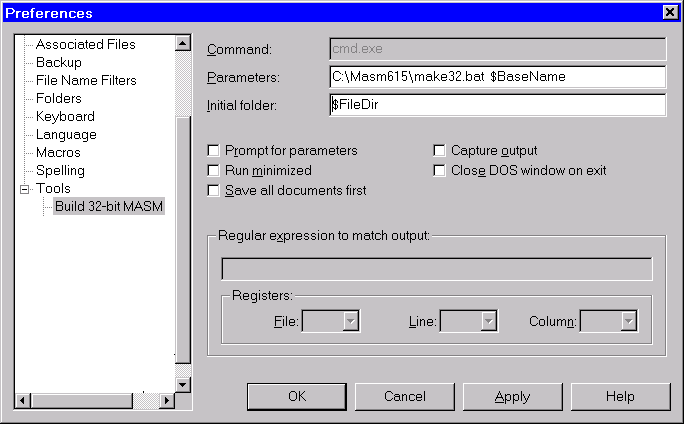
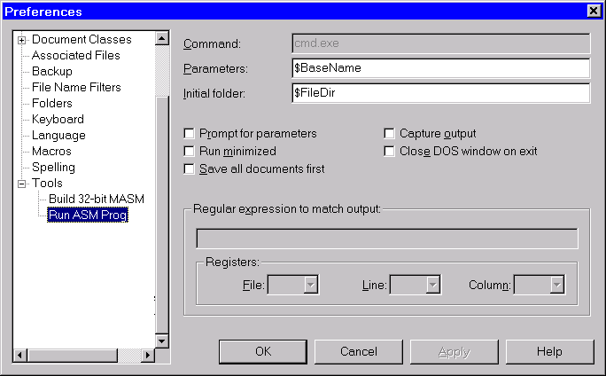
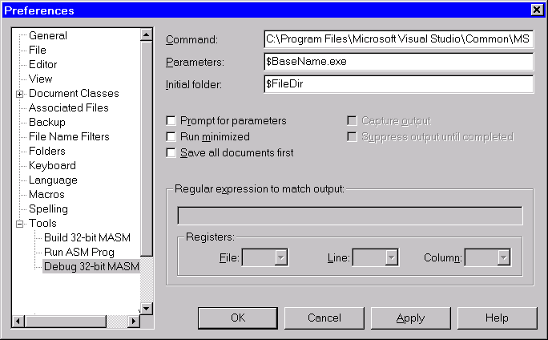

Installing the TextPad Editor
TextPad is a registered trademark of Helios Software Solutions.
Their web site is www.textpad.com.
Please review the EULA for this software before installing.
Helios has generously permitted us to distribute an unregistered evaluation
copy of TextPad 4. I personally use it as my editor of choice for assembly
language because it can easily customized. I particularly like its built-in
syntax highlighting feature.
In this short tutorial, we will show you how to add commands to the Tools
menu in TextPad, so you can easily assemble, link, and debug your assembly language
programs.
Step 1: Run the TextPad4.exe program located in the \TextPad
directory of this CDROM. This program will install the TextPad 4 text editor.
Step 2: Install the appropriate Tool Menu commands. It would be helpful
at this point to know what types of assembly language programs you will be writing.
Most of the programs in the first 11 chapters of the book are 32-bit Protected
mode programs. If you're taking a college course, ask your professor what types
of programs you will be writing:
- If you're going to be writing 32-bit Protected mode programs, click
here.
- If you're going to be writing 16-bit Real-mode programs, click
here.
Step 3: Create a MASM document class in
TextPad. This will enable you to customize colors, add syntax highlighting,
and configure other options.
You're done!
16-Bit Real-Mode Programs
Step 1: Build 16-bit MASM
- Select Preferences from the Configure menu.
- Select Tools in the left hand pane, and click the Add button.
- Select "DOS command..." from the drop-down list. When the popup
dialog appears, enter the following:
C:\Masm615\make16.bat $BaseName
- Click the Apply button.
- Next, you will rename the command to Build 16-bit MASM. To do this,
click once on the name, wait a second, and click again. When it turns blue,
retype the command's name and press Enter.
- Click OK to close the Preferences window.
- Select the Tools menu, and find Build 16-bit MASM command
listed there. In the right-hand pane, enter the following into the Initial
folder entry:
$FileDir
Following is a sample screen snapshot. (Optionally, you can check the Capture
output option to redirect the assembler's output messages to a TextPad editor
window.)
(The Regular expression to match output entry is explained fairly well
in the TextPad help system. It makes it possible to click on an Assembler error
message and have TextPad jump to the appropriate line in your source program.)
- Click OK to save your changes.
Step 2: Run ASM Prog
- As you have already created one command in the Tools menu, we can speed
things up a bit.
- Select Preferences from the Configure menu
- Select Tools in the left hand pane, and click the Add button
on the right side
- Select DOS command... from the drop-down list. When the popup dialog
appears, enter the following:
$BaseName
- Click the Apply button.
- Next, rename the command to Run ASM Prog. To do this, click once
on the name, wait a second, and click again. When it turns blue, retype the
command's name and press Enter. Click Apply.
- Click on the "+" next to Tools in the left-hand pane. When
the list expands, select Run ASM Prog. In the right hand pane of the
dialog, remove the check mark next to Capture output.

- Click OK to close the dialog and save your changes.
| The two commands you created will always act on the program in the currently
selected window. Normally, you execute the Build 16-bit MASM command,
and then if no errors result, you execute the Run 16-bit MASM command. |
Step 3: Debug 16-bit MASM
- Select Preferences from the Configure menu.
- Select Tools in the left hand pane, and click the Add button
on the right side.
- Select DOS command... from the drop-down list. When the popup dialog
appears, enter the following:
C:\Masm615\runCV.bat $BaseName
| We assume that you selected C:\Masm615 as your default install
directory for the Microsoft Assembler. If that is not the case, substitute
your own directory name every time you see us refer to C:\Masm615 in this
tutorial. |
- Select the Close DOS window on exit option
- Click the Apply button.
- Next, you will rename the command to Debug 16-bit MASM. To do this,
click once on the name, wait a second, and click again. When it turns blue,
retype the command's name and press Enter. Click Apply.

You're done!
If you need more information, TextPad has extensive online help that shows
how to edit the Tools menu. If you're making these modifications for multiple
users (as in a laboratory), you can use RegEdit to save the registry subtree
to a REG file. Look for the following entry:
HKEY_CURRENT_USER > SOFTWARE > Helios > TextPad 4 > Tools
Return to Top
32-Bit Protected Mode Programs
Step 1: Build 32-bit MASM
- Select Preferences from the Configure menu.
- Select Tools in the left hand pane, and click the Add button.
- Select "DOS command..." from the drop-down list. When the popup
dialog appears, enter the following:
make32.bat $BaseName
- Click the Apply button.
- Next, rename the command to Build 32-bit MASM. To do this, click
once on the name, wait a second, and click again. When it turns blue, retype
the command's name and press Enter.
- Click OK to close the Preferences window.
- Select the Tools menu, and find Build 32-bit MASM command
listed there. In the right-hand pane, enter the following into the Initial
folder entry:
$FileDir
Following is a sample screen snapshot. (Optionally, you can check the Capture
output option to redirect the assembler's output messages to a TextPad editor
window.)

(The Regular expression to match output entry is explained fairly well
in the TextPad help system. It makes it possible to click on an Assembler error
message and have TextPad jump to the appropriate line in your source program.)
- Click OK to save your changes.
Step 2: Run ASM Prog
- As you have already created one command in the Tools menu, we can speed
things up a bit.
- Select Preferences from the Configure menu
- Select Tools in the left hand pane, and click the Add button
on the right side
- Select DOS command... from the drop-down list. When the popup dialog
appears, enter the following:
$BaseName
- Click the Apply button.
- Next, you will rename the command to Run ASM Prog. To do this, click
once on the name, wait a second, and click again. When it turns blue, retype
the command's name and press Enter. Click Apply.
- Click on the "+" next to Tools in the left-hand pane. When
the list expands, select Run ASM Prog. In the right hand pane of the
dialog, remove the check mark next to Capture output.

- Click OK to close the dialog and save your changes.
| The two commands you created will always act on the program in the currently
selected window. Normally, you execute the Build 32-bit MASM command,
and then if no errors result, you execute the Run 32-bit MASM command. |
Step 3: Debug 32-bit MASM
This command may only be used if you have Microsoft Visual C++ installed
on your computer. The 32-bit debugger is named MSDEV.EXE (that name may change
in the future).
- Select Preferences from the Configure menu.
- Select Tools in the left hand pane, and click the Add button
on the right side.
- Select DOS command... from the drop-down list. When the popup dialog
appears, enter the following:
C:\Masm615\runCV.bat $BaseName
- Select the Close DOS window on exit option
- Click the Apply button.
- Next, you will rename the command to Debug 32-bit MASM. To do this,
click once on the name, wait a second, and click again. When it turns blue,
retype the command's name and press Enter. Click Apply.

- You're done!
If you need more information, TextPad has extensive online help that shows
how to edit the Tools menu. If you're making these modifications for multiple
users (as in a laboratory), you can use RegEdit to save the registry subtree
to a REG file. Look for the following entry:
HKEY_CURRENT_USER > SOFTWARE > Helios > TextPad 4 > Tools
Return to Top